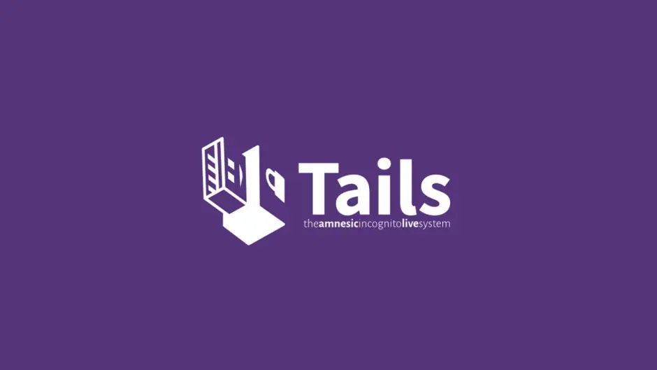
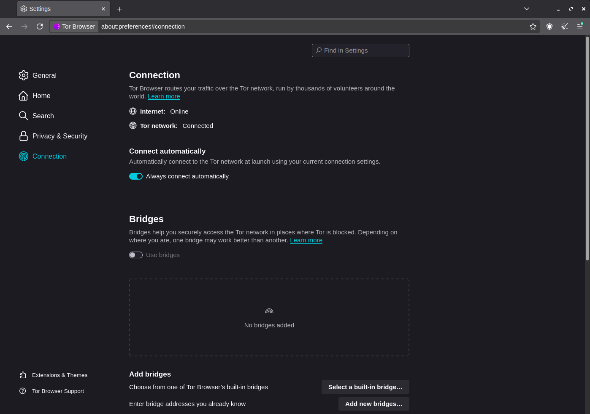
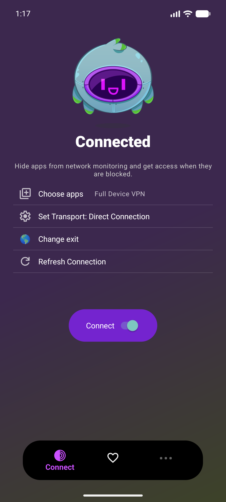

About Tor
The Tor Project is a nonprofit organization founded in 2006 to develop and maintain Tor, a privacy focused network based on onion routing. The general idea was developed in the mid-1990s by researchers at the U.S. Naval Research Laboratory. Tor is used by people who want to reduce online tracking, protect sensitive communications, or access information in places affected by censorship and regional restrictions.
Tor routes internet traffic through a series of 3 volunteer-operated relays (nodes). Traffic passes through three relays: an entry or guard relay, a middle relay, and an exit relay. Each relay knows only the part of the route it needs to know, which helps prevent any single relay from learning both the user's identity and destination. Tor uses layers of encryption between the relays, similar to the layers of an onion. However, an exit relay may be able to see unencrypted traffic, so websites should still use HTTPS (or onion sites).
Tor is valuable because it is decentralized and operated by the community rather than controlled by one company or government. It can make tracking and censorship more difficult, but it does not provide perfect anonymity. Mistakes such as logging into personally identifiable accounts, installing unsafe browser extensions, revealing identifying details, or using unoffical applications can expose a persons identity. Tor traffic can also be detected or analyzed by powerful observers through techniques such as traffic-correlation and timing analysis, especially when they can monitor both the user's connection and the destination.
Tor is a double edged sword. Journalists, researchers, activists, threat actors, and privacy nerds rely on it for safety and access to information, while criminals also misuse it. Tor isn't completely bullet proof to stupitity, you cannot stop a time based attempt to unmask you, and using javascript or changing a window size can completely fingerprint you across you browsing. Especially using it on phones, you can pretty much fingerprint a whole phone model really easily.
Tor's Projects
Tails
Tails is a linux distrobution based off of Debian. It's focus is on routing everything through the Tor Network, it is advertised on the Tor Project's website (in the blogs section).

Tor Browser
The Tor Browser is hands on the most popular project Tor has, it's known as the way to get into the dark web (onion sites), it removes many fingerprinting and tracking techniques, and has 3 presets (normal, safer, safest).


Orbot
Orbot is a mobile application for connection to Tor, mostly used for routing specific apps through Tor (example: FDroid has a setting to connect to orbot). Full system Tor would usually be the Tor VPN.
Official site: Tor Project